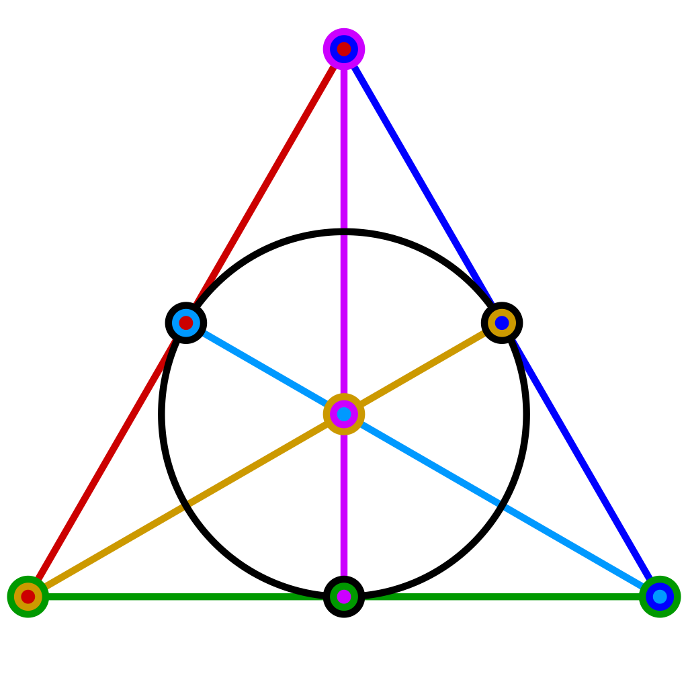

Experience
Graduate Research Assistant
Scientific Computing and Computational Fluid Dynamics Laboratory, University of Waterloo, Waterloo ON
September 2018 - Present
Developed Python code for computational fluid dynamics and scientific computing problems. Held weekly scrum-style meetings with ten graduate students in both the department of applied math and chemical engineering. Collaborated with a group of three other graduate students to work on problems in computational fluid dynamics.
Undergraduate Research Assistant
Thompson Rivers University, Kamloops BC
May 2018 - Aug 2018
Developed code to accurately model a chemical reaction. Co‑authored a published paper and gave a talk at the Canadian Undergraduate Math Conference. I improved readability and functionality on legacy code written in C for the accessibility of future students. Derived and implemented higher‑order numerical schemes for improved numerical accuracy. Automated programs using Bash scripts to run concurrent simulations.

Undergraduate Research Assistant
Thompson Rivers University, Kamloops BC
Jan 2017 - Aug 2018
I developed algorithms with Python resulting in proving theorems in graph theory. Co-authored a published paper and gave a talk at the Canadian Undergraduate Math Conference for over fifty math students.

Undergraduate Research Assistant
Thompson Rivers University, Kamloops BC
May 2016 - Aug 2016
Marked quizzes for a course with over 80 students. Implemented algorithms using Python to solve problems in Matroid theory on a Unix-based operating system.

Administrative Assistant
Canadian Cancer Society, Kamloops BC
May 2015 - Aug 2015
Handled all inquiries and donations directed to the Kamloops office. Maintained financial records for the office, and implemented a more orderly solution using Excel saving company time. Organized Relay For Life, an event that raised over $60,000 working as a committee coordinator.